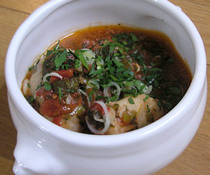

Fischsuppe aus einem einzigen Fisch
5,5 von 62 Frühlingszwiebeln in reichlich Olivenöl andünsten.
Fein gehackte Petersilie, Knoblauch und etwas Chilli beigeben. Nach ca. 1 min 8 EL Weisswein dazu und etwas einkochen. 250 gr Pelati hinzufügen und zugedeckt 20 min kochen. Vorbereitete Fischfilets (Festkochen, zB: Hecht, Seebarsch, Brasse, Flunder etc.) dazu geben und mit Salz und Pfeffer würzen. Weitere 15 min ziehen lassen.
